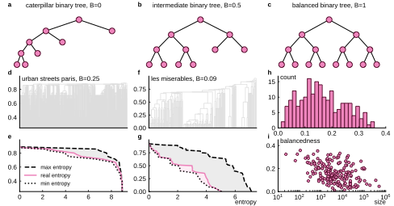
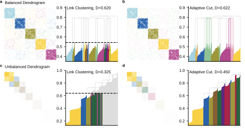

Adaptive Cut Reveals Multiscale Complexity in Networks
2Center for Social Data Science, University of Copenhagen
3School of Data Science, University of Virginia

Comparison between single-level cut (Link Clustering) and the adaptive cut method on a stochastic block model network.
Abstract
Hierarchical clustering and community detection are important problems in machine learning and complex network analysis. A common approach to identify clusters is to simply cut dendrograms at some threshold. However, single-level cuts are often suboptimal in terms of capturing underlying structure in the data, especially when the dendrogram is unbalanced.
In this paper, we present the adaptive cut, a novel method that leverages the hierarchical structure of dendrograms by employing multi-level cuts to overcome the limitations of single-level approaches. The adaptive cut optimizes an objective function using a Markov chain Monte Carlo with simulated annealing, resulting in better partitions.
Key Contributions
- Adaptive Cut Method: A novel multi-level cutting approach for dendrograms that optimizes objective functions using MCMC with simulated annealing, overcoming limitations of traditional single-level cuts.
- Balancedness Score: An information-theoretic metric that quantifies how balanced a dendrogram is, predicting the potential benefits of using multi-level cuts.
- Extensive Validation: Evaluated on over 200 real-world networks across diverse domains (social, economic, biological, transportation) showing significant improvements in partition density and modularity.
- Generality: Applicable to any clustering task that relies on a dendrogram and an objective function, including Link Clustering and Louvain optimization.

Improvement in partition density between single-level cut and adaptive cut as a function of dendrogram balancedness across 200 real-world networks.
Method Overview
The adaptive cut defines a Markov chain that walks up or down the dendrogram. As it goes up, it merges two neighboring partitions into a larger one; as it goes down, it splits a single partition into two smaller ones. Each move is accepted or rejected based on the objective function difference using the Metropolis-Hastings algorithm.
To prevent the Markov chain from getting trapped in local maxima, we employ simulated annealing with a fast cooling schedule. The chain is initialized at the optimal single-level cut, significantly reducing mixing time compared to random initialization.
The balancedness score compares the actual branching structure of a dendrogram with both a perfectly balanced scenario (maximal entropy) and a highly skewed one (minimal entropy). Networks with lower balancedness scores benefit more from the adaptive cut.
BibTeX
@article{boucherie2025adaptive,
title={Adaptive cut reveals multiscale complexity in networks},
author={Boucherie, Louis and Ahn, Yong-Yeol and Lehmann, Sune},
journal={arXiv preprint arXiv:2512.08741},
year={2025}
}